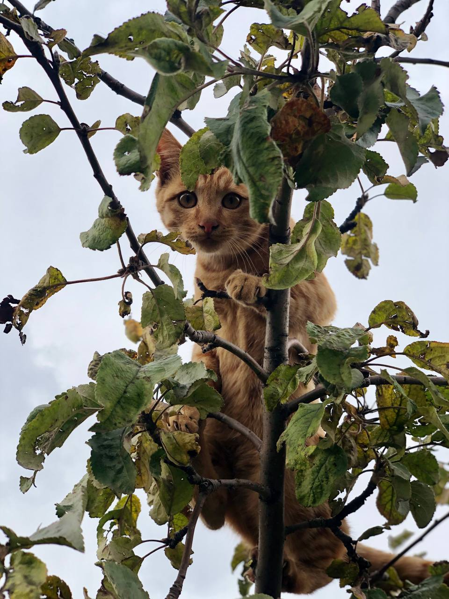

Գլխավոր
Տեղեկություն

Վազգեն
Ծնվել է 2024 թ․ ապրիլի 13 ին , ունի 1 քույր և 1 եղբայր , եղբայրը ընկել է քաջի մահով , քրոջ անունը ՄԻՄԻ։
Ապրում է։ Սերգո Ավետիսյան 35 ում
Տեր։ Գարիկ Մարդոյան
Գյուղում շատ հարգված ու սիրված